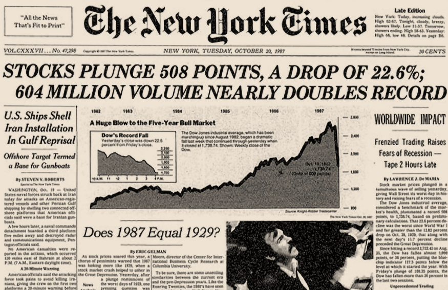
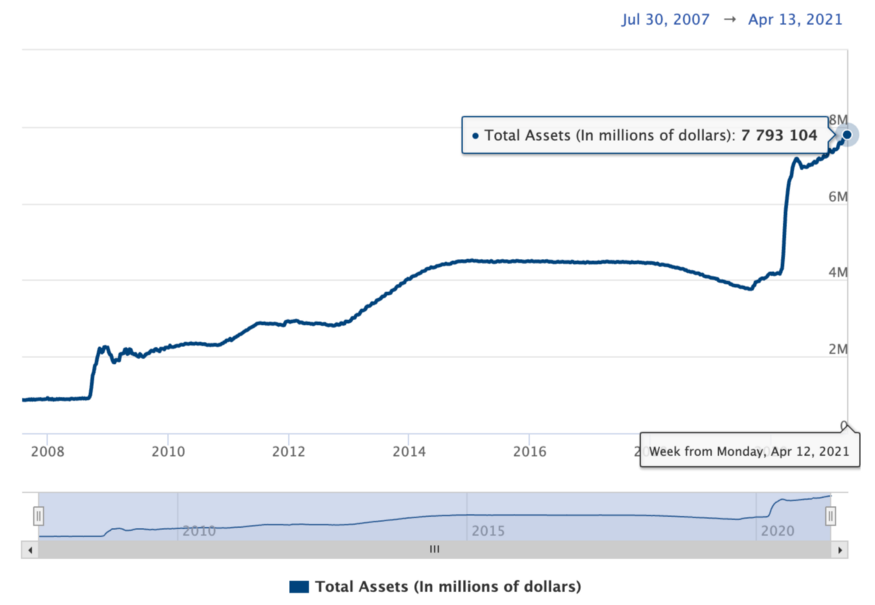

"이번에는 다르다"... 과연? - 금리상승과 인플레 경고
게시: 2021-04-29T06:30:51+09:00
오늘 포스팅은 미디엄(Medium.com)에 실린 소렐(Sylvian Saurel)이라는 사람의 인플레로 인한 금융 위기 경고문입니다. 제가 이 사람 말을 꼭 믿어서 올리는 것은 아닙니다. 다만 이 사람의 글에 실린 현재의 인플레 관련 수치들이 흥미로와서 발췌 번역했습니다. 실제로 미국 물가가 이렇게 많이 올랐는지 제가 개인적으로 확인해보지는 않았습니다. 다른 이런저런 전문가들 이야기를 들어보면 (아래 포스팅에서 우려하는 것과는 반대로) 과거 닷컴 버블과는 달리 현재 테크 기업들은 이윤을 내고 있기 때문에 이번에는 진짜 다르다고 주장하더군요. 뭐 판단은 각자가 하셔야 합니다. 원문은 아래에서 직접 읽어보실 수 있습니다.
------------------------- This Time Will Be No Different — Why a Great Financial Crisis Awaits Us 이번에도 (지난 번과) 다르지 않다 - 대형 금융 위기가 우리 앞에 놓여 있는 이유 Many refuse to admit it, but the current situation is very worrying. 많은 이들이 인정하고 있지 않지만 현재 상황은 매우 우려스럽습니다.

"이번에는 다르다." 이 문구는 경제 상황이 실제로는 우려스러움에도 금융 시장이 기존의 모든 기록을 경신할 때마다 수십년간 읊어지던 이야기입니다. 그럼에도 불구하고 어떤 사람들은 이번에는 다르다고 믿고 싶어합니다. 지금의 주식 시장 상황을 보시지요. S&P 500 지수는 2020년 3월 이후 80% 상승했습니다. 지금은 4,000 포인트를 훌쩍 넘겼는데, 이건 2020년 초에만 해도 달성 불가능하다고 여겨지던 기록입니다. 다우 존스 지수도 34,000 포인트를 넘어서 기록을 깨고 있습니다. 2020년 초만 하더라도 30,000 포인트는 깨기 어려운 유리천장 같은 숫자였습니다. The Tech world is in the middle of a bubble 테크 세계는 버블이 한창입니다. 테크 회사들에 대한 시가 총액(market cap)은 2020년 3월 이후 폭발했습니다. 애플은 시가 총액이 2조 달러가 넘는 첫번째 미국 회사가 되었습니다. 마이크로소프트, 아마존, 구글은 모두 시가 총액이 1.5조 달러가 넘었습니다. 이 MAGA 반열에는 곧 테슬라도 합류할 것 같습니다. 테슬라의 시가 총액은 작년에 거의 10배가 성장하여, 2021년 초에 최고 8천8백억 달러에 달했습니다. 미국의 분기당 IPO(기업 신규 상장)는 2021년 1사분기에 102건이라는 기록에 도달했습니다. 기억하시겠지만 기존 기록은 2013년의 83건이었습니다. 이런 숫자들만 보신 분이라면 실제 경제도 괜찮을 거라고 생각하기 쉽습니다. 그건 분명히 사실이 아닙니다. 세계는 2020년 3월 이후 코로나 판데믹을 겪고 있었고, 주요 경제 대국들의 경제는 몇달 동안 매우 심한 타격을 입었습니다. 미국에서는 경제 상황이 회복되고 있는 것으로 보이지만 코로나 변이 바이러스들이 통제될 때까지 미래는 불확실합니다. 그래서 이런 모든 미국 주식 시장의 기록 갱신을 어떻게 설명할 수 있겠습니까? The current situation is the result of the Fed’s monetary policy 현재 상황은 연방준비위원회 통화 정책의 결과입니다. 설명은 상당히 간단합니다. 이 모든 것은 연방준비위원회의 매우 공격적인 통화 정책 덕분입니다. 어떤 희생을 치루더라도 미국 경제를 지탱해야 한다는 결심으로, 연준은 무제한 양적 완화 프로그램을 2020년 3월말부터 수행했습니다. 불과 몇개월 사이에 4조 달러가 허공에서 인쇄되었습니다. 연준은 매달 시장에서 점점 더 많은 주식을 사들여 시장을 인위적으로 지탱했습니다. 연준의 대차대조표는 자산이 이제 7.8조 달러에 접근하고 있음을 보여줍니다.

연준의 이런 통화 정책에는 유럽 중앙은행(European Central Bank)도 동조했습니다. 유럽 중앙은행도 시장에서 자산을 대량으로 사들였습니다. 유럽 중앙은행의 자산은 2021년 4월 중순 현재 7.5조 달러 정도입니다. 유럽 중앙은행은 벌써 몇 년째 마이너스 금리를 유지하고 있습니다. 연준은 지금 현재 제로 금리 상태에서 멈춰서 있는데, 이건 20년 전에는 상상하기도 어려운 일이었습니다. 이런 조치로 경제를 지탱할 수 있었을지는 몰라도, 그로 인해 이미 말씀드린 주식 시장의 진짜 테크 거품이 만들어졌습니다. 채권이 더 이상 매력적이지 않게 되었으니 모든 투자자들이 주식시장으로 뛰어든 덕분이지요. The return of inflation and a rise in interest rates leads to fears of the worst 인플레의 귀환과 금리 인상은 최악의 공포로 향하게 됩니다. 그러나 상황이 이제 바뀌고 있습니다. 미국 국채(U.S. Treasury bonds)의 장기 금리가 서서히 그러나 확실히 오르고 있습니다. 연준은 인정하지 않으려 하겠지만 인플레가 오고 있습니다. 각종 원자재(commodity) 가격이 2020년 6월 이후 치솟고 있습니다. 철강 Steel +145% 목재 Lumber +126% 석유 Oil +80% 대두 Soybeans +71% 옥수수 Corn +69% 구리 Copper +50% 은 Silver +38% 면화 Cotton +35% 커피 Coffee +34% 밀 Wheat +25% 쇠고기 Cattle +21% FAO (Food and Agriculture Organization of the United Nations) 식품 지수는 이 기간 중 25% 상승했습니다. 혹시 모르시는 분을 위해 알려드리자면 FAO 식품 지수는 대표적 식품 원자재 국제가격의 매달 변동액에 대한 측정치입니다. 미국 주택용 부동산 가격은 2020년 1월 ~ 2021년 1월 사이 11.2% 뛰었습니다. 이건 지난 15년간 최고 기록입니다. 개인이나 기업이나 낮은 금리의 혜택을 보기 위해 더 많은 빚을 냈습니다. 전세계 각국 정부들도 거액의 코로나 지원금(stimulus packages)을 대기 위해 빚을 잔뜩 냈습니다. 미국의 공적 부채는 28조 달러를 넘어섰는데 이는 미국 GDP의 130% 이상되는 금액입니다. A global debt crisis threatens the future 전세계적인 부채 위기가 미래를 위협하고 있습니다 2020년 말까지 전세계의 부채가 277조 달러를 초과하면서 상황은 더욱 지탱이 어려워지고 있습니다. 스포츠 세계의 비유를 쓰자면 당장은 순풍이 불고 있어 좋습니다. 자전거 경주에서 모든 선수들이 순풍의 덕을 보고 있지요. 그러나 바람이 역풍으로 바뀌면 상황은 역전되어 그 중 최고의 선수만이 무리에서 벗어날 수 있게 됩니다. 다른 선수들은 하나씩 하나씩 경주에서 탈락하게 됩니다. 불어오는 역풍이란 금리 상승과 인플레의 귀환이라는 조합입니다. 그 시점이 되면 불편한 진실을 지금 외면하고 있는 모든 이들이 진실을 강제로 마주하게 될 것입니다. 이번에도 지난 번들과 다르지 않다는 것을요. 아직도 의심스럽다면, 대부분의 관측자들이 '이번에는 다르다'라고 생각했던 과거의 몇몇 유명 위기들을 상기시켜드리겠습니다. “Black Thursday” of 1929 1929년의 검은 목요일 모든 금융 위기의 어머니는 1929년 10월 24일 검은 목요일에 시작되었습니다. 이 날, 대량의 주식 매도가 월가를 흔들었고 여러 해에 걸친 투기를 끝장냈습니다. 1달도 안 되어 다우 존스 가치의 절반 정도가 사라져 버렸습니다. 저축을 잃어버린 사람들은 소비를 대폭 줄였고 산업 생산은 곤두박질 쳤습니다. 이어진 몇 년간, 실업자의 수가 폭발하면서 미국의 수백만 가구와 전세계를 곤궁으로 몰아넣었습니다. 위기가 확산되면서 은행이 붕괴되었고 특히 오스트리아와 독일에서 심하게 무너졌습니다. 그로 인해 야기된 참혹한 결과에 대해서는 우리 모두가 잘 알고 있습니다. “Black Monday” of 1987 1987년의 검은 월요일 이번에는 월가를 위기로 몰아넣은 위기가 월요일에 일어났습니다. 1987년 10월 19일, 다우 존스는 22.6%를 날려먹었는데 이는 역사상 최악의 하루 손실액입니다. 이 폭락은 전세계의 증시에도 영향을 끼쳤습니다. 정교한 금융 기법에 의한 옵션과 파생상품이 활용된 투자 기법들이 폭락을 가속시켰습니다. 하지만 연준의 신속한 개입으로 시장을 유동성으로 지탱하면서 주식 시장의 충격을 감당해냈고 금융 시스템의 다른 곳까지 오염되는 것을 막을 수 있었습니다. 미국 주식 시장은 2년도 안되어 폭락 이전 수준을 회복했습니다. The Internet bubble bursts in 2000 2000년의 인터넷 버블 붕괴 1996년 12월 5일, 연준 위원장인 앨런 그린스펀이 주식 시장이 고평가 되어있을 수 있다는 경고를 담은 연설을 TV에서 했습니다. Alan Greenspan spoke of “irrational exuberance” 앨런 그린스펀이 '비이성적인 생동감'에 대해 말하다 "분명히, 지속적으로 낮은 인플레는 미래에 대한 불확실성이 적다는 것을 암시합니다. 그리고 더 낮은 리스크 프리미엄은 주식이나 다른 수익 자산의 가격이 더 높아진다는 것을 암시합니다. 우리는 그걸 서로 반비례 관계에 있는 주가/이익 비율(price/earnings ratio)과 인플레율로부터 과거에도 보았습니다. 하지만 비이성적인 생동감이 자산 가격을 과도하게 상승시키는 것을 어떻게 알 수 있을까요? 그런 과도한 상승은 과거 10년 간 일본에서 발생했던 것 같은 예상치 못한 장기 수축으로 이어질 수 있습니다." 2000년 3월, 미국 기술주들의 지수인 나스닥은 고점에 달했다가 떨어지기 시작했습니다. 인터넷 혁명에 의해 주식 시장은 미국과 유럽에서 5년간 빠르게 상승하고 있었습니다. 그 호황이 끝난 것은 부분적으로는 금리 상승 때문입니다만 주된 이유는 투자자들이 신경제의 금융 성적에 대한 실리콘 밸리의 약속을 믿지 않기 시작했기 때문이었습니다. 인터넷 버블이 터졌고 엄청난 손실이 발생했습니다. The subprime mortgage crisis in 2008 2008년 서브프라임 모기지 사태 미국 주택 시장 거품에 악성으로 노출된 리먼 브라더즈 투자은행은 2008년 9월 15일에 파산을 신청했습니다. 미국 금융 당국은 그런 월가의 거물급 은행의 파산을 내버려두는 무리수를 두었습니다. 그럼에도 불구하고, 일반 대중에게 본보기를 보이기 위해서 대가를 지불해야 했습니다. 그 충격 하에서, 세계의 주식 시장의 붕괴에는 가속도가 붙었고 그 와중에 상호 불신용은 부채 상환(credit freeze)을 부추겼습니다. 그러나 각국 정부들과 중앙은행들은 신속히 반응하고 상호 협력하여 위기에 빠진 금융 시스템의 활동을 지탱해주었습니다. 그럼에도 불구하고 금융 위기의 충격은 매우 심각하여 미국은 제2차 세계대전 이후 가장 긴 불황을 겪어야 했습니다. Final Thoughts 맺음말 이런 과거의 거대한 금융 위기에는 비슷한 점들이 많습니다. 투기, 금융 거품, 도미노 효과 등등입니다. 더 심각한 것은 매번, 모든 사람들이 이번에는 다르다고 생각한다는 것입니다. 하지만 매번, 위기는 발생했습니다. 불행히도 몇 달, 혹은 몇 년 안에 상황은 반복될 것이라고 생각합니다. 금리 인상과 인플레가 시작되면 우리 머리 위에 맴도는 전세계적인 부채 위기가 언제든 터질 수 있습니다. 그런 위기가 올 때까지, 더 많은 주변 사람들이 "이번에는 다르다"라고 말할 수록 과거보다 더 주의하시기 바랍니다. 그런 말이 다음 위기가 머지 않았다는 신호일 가능성이 높습니다.